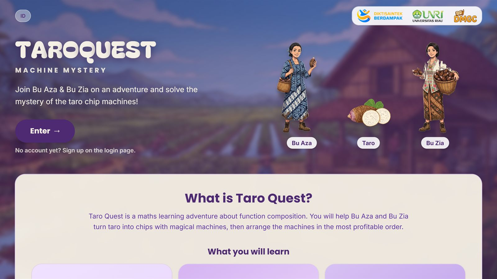
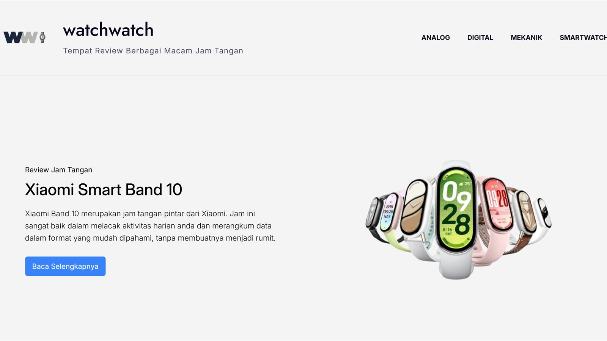

Semua project.
Lima project yang saya kerjakan dari awal sampai bisa dipakai — dari LKPD interaktif dan game edukasi sampai simulasi bisnis dan portal berbasis CMS.
-
01
Cassava Village
LKPD interaktif komposisi fungsi untuk Fase F

-
02
Mathbiz Riau
Simulasi bisnis + matematika, bernuansa Melayu Riau

-
03
Cooking Number
Game menyusun angka bertema restoran untuk siswa SMP

-
04
Taro Quest
LKPD interaktif dua bahasa, dikerjakan bersama teaMate

-
05
WatchWatch
Portal review jam tangan berbasis WordPress
